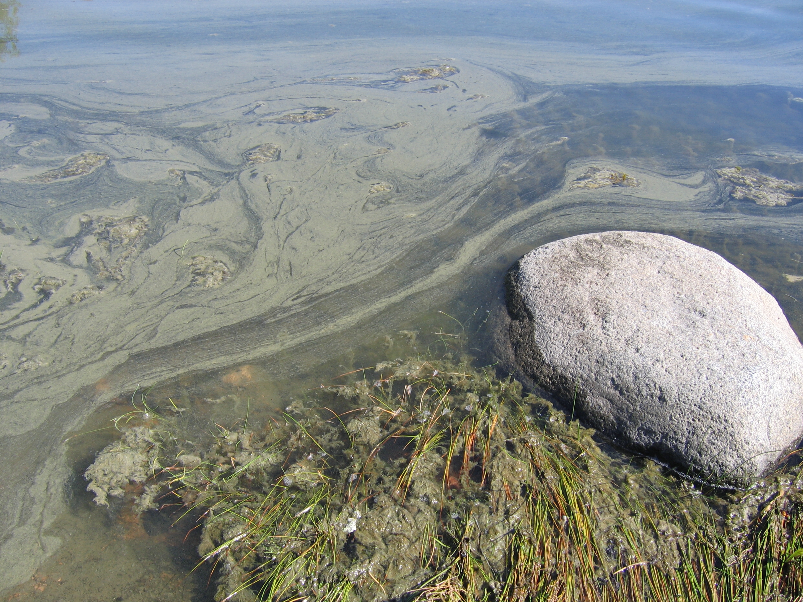

Otto and Sylvia are classmates and both dedicated fishers. Last summer they set out on a fishing trip to a remote lake, as they were bored of fishing on the same river near their hometown every time. When they arrived at their destination, it turned out that the lake was all green, instead of the bluish colour they had expected. They also noted that the local authorities had put up a sign saying that it was forbidden to swim in the lake due to eutrophication and risk of botulism. Nevertheless, they took out their fishing rods and tried to catch pike and perch. They used shiny lures, which had always worked well in the river in their hometown. However, after three hours of waiting patiently, they still had not caught anything. After eating their lunch, they started to use dough as bait, hoping that they might catch some smaller species of fish. But when it was time to go home, their bucket was still empty. So while the conditions in the lake were such that the algae flourished, there appeared to be no fish at all.

Algal bloom by the shore after a week of warm weather. Photo taken in Sipoo, Finland.
source: Wikipedia / Ronja Addams-Moring
You have read the story of Otto and Sylvia, having difficulty catching any fish in the green lake. The story of Otto and Sylvia is of course made-up. But the problem of the green lakes is real: many freshwater bodies in Europe and other continents are currently in a state where certain species of algae are very abundant, but where there are hardly any fish anymore. Your job is to find out what abiotic component makes the algae grow so abundantly. First, do some background reading. Second, take a look at the dynamic model that has been created for you to carry out your experiments. Probably you will not understand the ins and outs of this model right away. A good starting point is to find out what are the variables used in this model. If you are going to work with SCYDynamics for the first time, it is a good idea to complete this introductory task first. After you have become acquainted with the most important terms and concepts related to this phenomenon, try to formulate the main problem in a few sentences (50 words maximum).